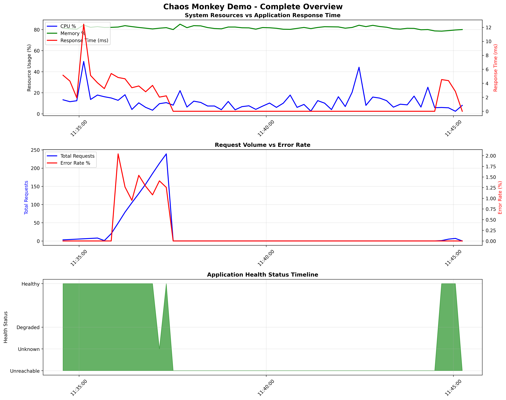
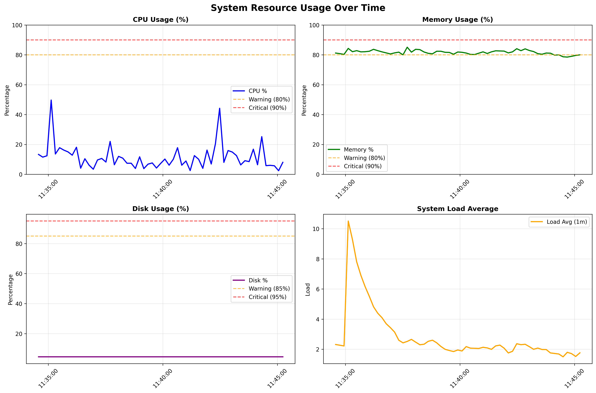
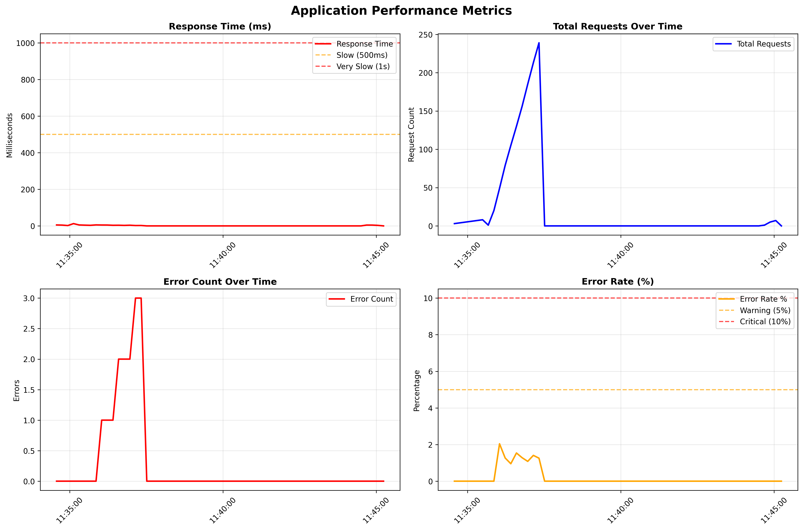
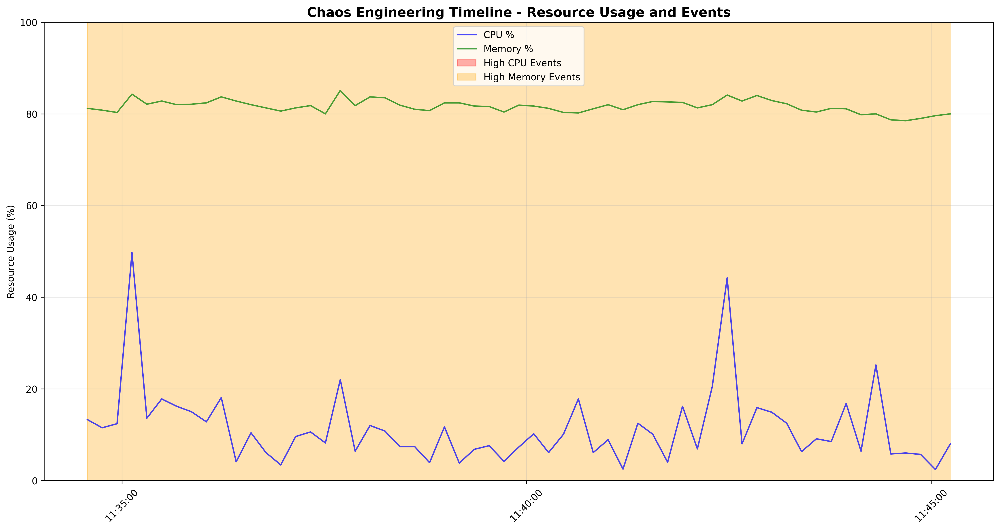

🐒 Chaos Monkey Demo - Monitoring Dashboard
Generated on 2025-06-02 11:45:26
📊 Session Summary
Duration
59 samples
Monitoring Period
2025-06-02T11:34:34 to
2025-06-02T11:45:14
Data Points
59 metrics collected
📈 Complete Overview

💻 System Resources

🌐 Application Metrics

⚡ Chaos Timeline

🔍 Analysis Notes
Resource Spikes:
Look for correlation between CPU/Memory spikes and application response time
Error Patterns:
Identify if errors increase during high resource usage periods
Recovery Time:
Observe how quickly the system recovers from chaos events
Baseline Performance:
Compare normal operation vs. chaos event periods